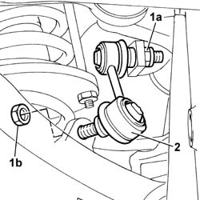

4420C12 Rear suspension ANTI-ROLL BAR JOINT (one), left or right - R.R. on vehicle
- Path
- Procedures > 44 SUSPENSION AND WHEELS > 4420 REAR SUSPENSION > 4420C ANTI-ROLL BAR/SUSPENSION RODS REAR > 4420C12 Rear suspension ANTI-ROLL BAR JOINT (one), left or right - R.R. on vehicle
- Kind
- repair procedure (removal / refitting; the operation number is the code)
- Applies to
- all engines; all production periods
- Interactive page
- https://sloeber94.github.io/elrnDB-lThss/en/#/78913
Applies to: all engines; all production periods
 Removing
Removing
 Refitting
Refitting- Position the vehicle on a lift.
See in Op. 4450B13 Rear WHEELS (two) - R.R.
See in Op. 7055B45 Right rear wheel arch liner - R.R.
1. Undo the nuts fixing the joint to the anti-roll bar (1a) and to the rear axle (1b).
2. Remove the anti-roll bar joint.

Applies to: all engines; all production periods
Refitting
Removing- Fit the anti-roll bar joint and tighten the fixing nuts to torque.
 | Value - daNm | Fastening | Component | Ø |
|---|---|---|---|---|
. | (anti-roll bar) 4.5 | Nut | REAR ANTI-ROLL BAR JOINTS | M10 |
| Value - daNm | Fastening | Component | Ø |
|---|---|---|---|---|
. | (Steering knuckle) 4.5 | Nut | REAR ANTI-ROLL BAR JOINTS | M10 |
See in Op. 7055B45 Right rear wheel arch liner - R.R.
See in Op. 4450B13 Rear WHEELS (two) - R.R.
- Remove the vehicle from the lift.